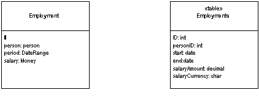

| Home | Articles | Talks | Links | Contact Me | ISA | ThoughtWorks |
Map an object into several fields of another object's table

There are many small objects that make sense in an OO system, that don't make sense as tables in a database. Examples include currency aware money objects, date ranges and the like. So although the default thinking is to save an object as a table, no sane person would want a table of money values.
An Embedded Value maps the values of an object to fields in the record of the object's owner. So in the sketch, we have an employment object with links to a date range object and a money object. In the resulting table the fields in those objects are mapped to fields in the employment table, rather than making new objects themselves.
Carrying out this exercise is actually quite simple. When the owning object (the employment) is loaded or saved, the dependent objects (the date range and the money) are loaded and saved at the same time. The dependent classes won't have their own persistence methods, all persistence is done by the owner.
This is one of these patterns where the doing of it is very straightforward, but knowing when to use it becomes much more complicated.
The simplest and straightforward cases for this are the clear simple Value Objects like money and date range. Since Value Objects don't have identity you can create and destroy these easily without worrying about such things as Identity Maps to keep them all in sync. Indeed all Value Objects should be persisted as Embedded Value, since there you'd never want a table for them.
The grey line comes on whether it's worth storing reference objects using Embedded Value, such as an order and shipping object. The principal question here is whether the shipping data has any relevance outside the context of the order. One issue is the loading and saving. If you only load the shipping data into memory when you load the order, then that's an argument for saving both into the same table. Another question is whether you'll want to access the shipping data separately though SQL. This can be an important issue if you are using reporting through SQL and aren't using a separate database for reporting.
In most cases you'll only use Embedded Value on a reference object when the association between them is single valued at both ends (a one-to-one association). Occasionally you may use it if there are multiple candidate dependents if their number is small and fixed. Then you'll have numbered fields for each value. This is messy table design, and is horrible to query in SQL, but it may have performance benefits. Usually if this is the case, however, Serialized LOB is the better choice.
Since so much of the logic for deciding when to use Embedded Value is the same as for Serialized LOB, there's the obvious matter of choosing between the two. The great advantage of Embedded Value is that it allows SQL queries to be made against the values in the dependent object. Although using XML as the serialization, together with XML based query add-ons to SQL may alter that in the future, at the moment you really need to use Embedded Value if you want to use dependent values in a query. This may be important for separate reporting mechanisms on the database
Embedded Value can only be used for fairly simple dependents. A solitary dependent, or a few separated dependents works well. Serialized LOB however works with more complex structures, including potentially large object sub-graphs.
Embedded Value has been called a couple of different names in its history. TOPLink refers to this pattern as aggregate mapping. Visual Age refers to this as composer.
This is the classic example of a value object mapped with Embedded Value. We'll begin with a simple product offering class with the following fields
class ProductOffering... private Product product; private Money baseCost; private Integer ID;
In these fields the ID is an Identity Field, and the product is a regular record mapping. We'll map the baseCost using Embedded Value. We'll do the overall mapping with Active Record to help keep things simple.
Since we're using Active Record we need save and load routines. These routines are on the product offering class, since it's the owner. The money class has no persistence behavior at all. These routines are quite simple. Here is the load method.
class ProductOffering...
public static ProductOffering load(ResultSet rs) {
try {
Integer id = (Integer) rs.getObject("ID");
BigDecimal baseCostAmount = rs.getBigDecimal("base_cost_amount");
Currency baseCostCurrency = Registry.getCurrency(rs.getString("base_cost_currency"));
Money baseCost = new Money(baseCostAmount, baseCostCurrency);
Integer productID = (Integer) rs.getObject("product");
Product product = Product.find((Integer) rs.getObject("product"));
return new ProductOffering(id, product, baseCost);
} catch (SQLException e) {
throw new ApplicationException(e);
}
}
Here's the update behavior. Again it's a simple variation on the updates.
class ProductOffering...
public void update() {
PreparedStatement stmt = null;
try {
stmt = DB.prepare(updateStatementString);
stmt.setBigDecimal(1, baseCost.amount());
stmt.setString(2, baseCost.currency().code());
stmt.setInt(3, ID.intValue());
stmt.execute();
} catch (Exception e) {
throw new ApplicationException(e);
} finally {DB.cleanUp(stmt);}
}
private String updateStatementString =
"UPDATE product_offerings" +
" SET base_cost_amount = ?, base_cost_currency = ? " +
" WHERE id = ?";
 |  |